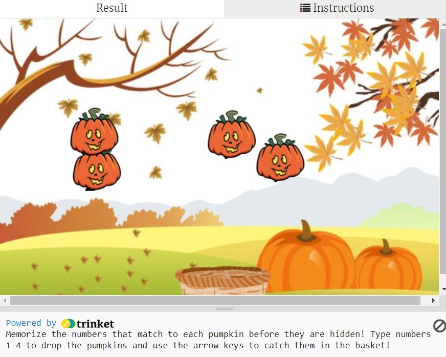
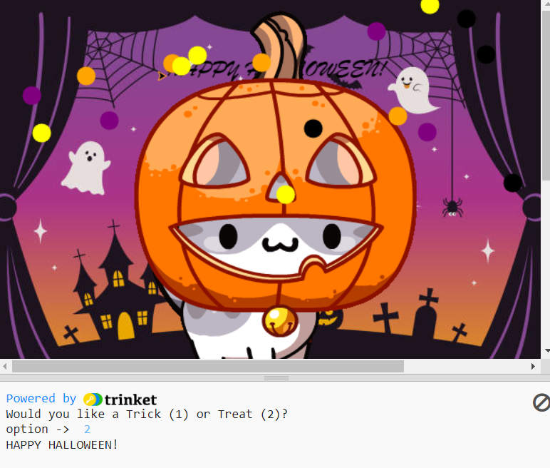
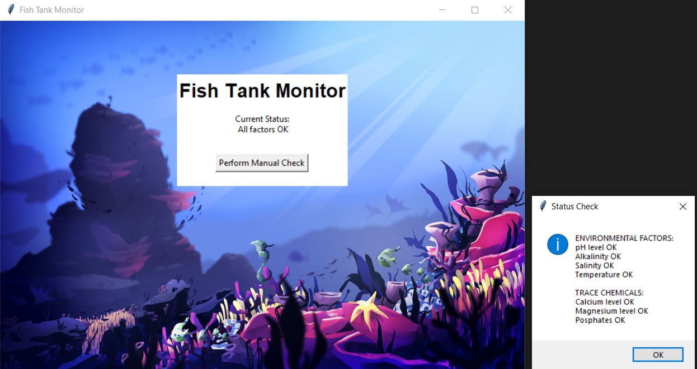
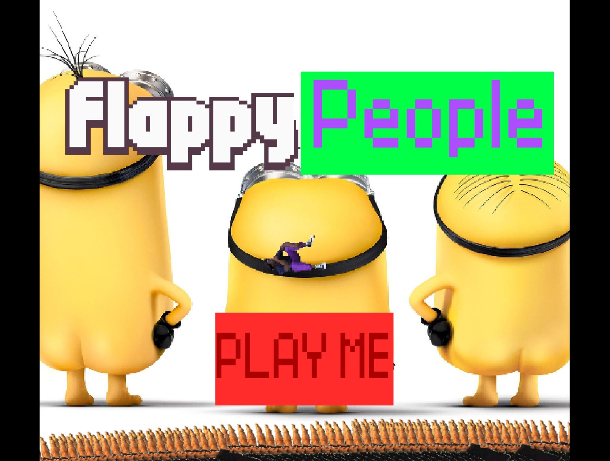

Home
Portfolio
About Me
This is my Portfolio Page!

Make Your Own Crumbl Cookie🍪.

This was our first CSP project, where we created a simulation of ordering and customizing your own Crumbl Cookie online! We created the code using "if" and "elif" statements while asking the user various questions. You can customize things such as frosting, cookie flavor, toppings, and sprinkles.
Numbered Pumpkin Catching Game!🎃.

This was our second CSP project, where we created a game where the player uses their keyboard to catch falling pumpkins by moving the basket!
Halloween Card!🧛

A halloween card for the children's hospital that allows them to pick Trick or Treat!
Fishtank Project🐟

In this project we learned to test the security of a fish tank monitoring system.
Our group identified how the program should work and checked its correctness, finding errors and testing possible solutions.
Flappy People (Scratch)

This was our groups scratch program. We created a game on Scratch that simulates the popular game flappy birds but instead with people!
3.1.6 project
In conclusion we believe the rover is in the Desert region. Based on the 4 data groups given and the graphs we drew for each region we identified that the data best matched the graphs of the desert region. We believe that graph 1 is temperature, graph 2 is sound, graph 3 is gyroscope, and graph 4 is light.
Modified bits in pictures.

Use data files to create graphs.

Using netlogo do remix of illusions.